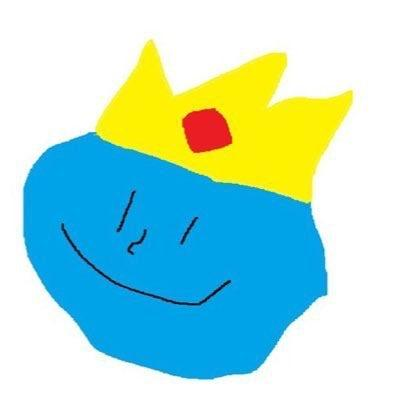

Please allow me to introduce myself :
Hi I'm Ivan (or K-avi)! I'm a CS student in M2 at Sorbonne Universite in France. I'm Interested in systems and embedded programming,
SIMD and related topics :)
I mostly code in C. I'll use Python when I have to do data analysis and plots. I can also use
bash for scripting stuff. I'm slowly getting into C++ and I'd like
to learn Rust at some point.
At the moment this page is an index with links to the different projects I've worked
on! Feel free to check them out!
Learn more about :
- MusicTool my first ever project.
It's a command line tool to perform musci theory oriented operations.
- (SIASL)² the acronym for
(Siasl Is a Silly Language)² which is the abriged version of (Siasl Is A Silly Language) . (Siasl Is a Silly Language) is a
silly language. It's an overdesigned turing tarpit if such a thing is even possible.
- Heapfuck a small binary heap based
turing tarpit
- Fibofuck a fun
fibonacci heap based turing tarpit
- Protesting On Graphs
a project I worked on during my internship at LIP6 in the
summer of 2023. It's a program to make simulations of walkers on graphs.
- Edgerunner
A command line rogue like built with ncurses. The main idea of the game is that the
maze is actually a planar graph :)
- Link Stream Robustness Tester
A group project I've worked on with Fur0rem and dassire . The project was part of a college course. It's goal
is to implement a way to measure the robustness of a Link Stream (a linkstream is a way
to represent a temporal network see this paper
for more informations).
- Shadimem
A group project I've worked on with PigeonsOwnMe and yoyolejojo .
The project was part of a college course. It's goal
was to implement a Distributed Shared Memory (DSM) in C with unix sockets!